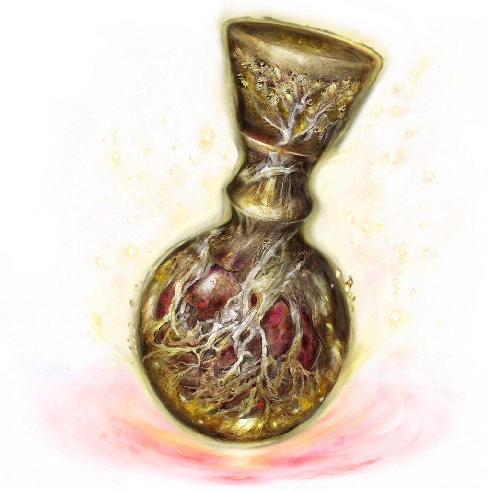

Odin Recipes
Recipes built for a Tarnish. Built for a God slayer.
You do not.
Unafraid, you open the second tome only to be met with a recipe for what seems to be a drink?

Underneath an image of what you can only imagine is some sort of concoction, you find a recipe.
Crimson Tears
The Crimson Tears are a gift of divinity blessed by Merika herself, derived from the Rowa berry and Roses.
Ingredients
Rose Syrup
- 1 cup of water
- 1 cup of sugar
- 1/4 cup of edible roses
For the Mixture
- .5oz of rose syrup
- .5oz of lemon juice
- 2.5oz blood orange juice
- 1.5oz Empress 1908 gin
- 1/4 teaspoon of white luster powder
- 1 small sheet of edible 24k gold
Instructions
-
In a jar (or similar sealable container, perhaps a cracked pot), combine your water and rose petals. Allow the water to infuse anywhere from 1 hour to overnight.
-
Pour the rose petal water into a pot, add your sugar. Cook on low until the sugar completely dissolves. Strain into a sealable bottle, set aside. That's your rose syrup!
-
For the cocktail - in a glass, combine your rose syrup, lemon juice, fresh squeezed blood orange juice, Empress 1908 gin, luster powder, and sheet of gold into a shaker. Add some ice, and shake well. Strain and pour into your flask (or any nicely presentable glassware).
-
Sip, replenish, relax... the worst is yet to come, Tarnished.
Click a rose to go back.